Steinofenbäcker Produkte
Alle Produkte von DataNature.de
Gesamt: 130 Artikel | Im Sortiment: 29 | Vegan: 0
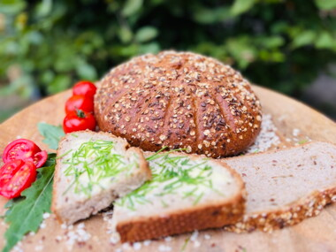
Dinkel-Saaten-Brot
Zutaten: DINKELMEHL TYP 812* ², Wasser, DINKELVOLLKORNMEHL* ², HEFE*, SESAM*, Sonnenblumenkerne*, Kürbiskerne*, DBM*² (DINKEL-Backmittel*²: DINKELmehl*², Meersalz, Zucker*, GERSTENmalzmehl*, Acerolasaftkonzentrat*, Tapiokastärke*), Meersalz, HAFERFLOCKEN*, Leinsamen braun*, DINKEL Starter*² (DINKELschrot* ², DINKELmehl* ², Wasser Meersalz, Lactobacillaceae). ²= (UR-WEIZEN)*aus kontrolliert ökologischer Erzeugung
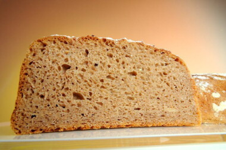
Familienbrot
Zutaten: Wasser, WEIZENVOLLKORNMEHL*, ROGGENVOLLKORNMEHL*, WEIZENSCHROT*, Kartoffelflocken*, Meersalz, BIOHEFE*, GERSTENMALZMEHL*, ROGGEN StartGut® Bio* (ROGGENschrot*, Wasser, ROGGENmehl*, Trockenglucose*, Lactobacillaceae)*aus kontrolliert ökologischer Erzeugung
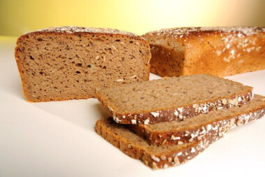
Familienbrot-Roggensaft
Zutaten: Wasser, ROGGENVOLLKORNMEHL*, DINKELSCHROT* ², Meersalz, SESAM*, Sonnenblumenkerne*, Hirse*, Leinsamen braun*, ROGGENSCHROT*, HEFE*, ROGGEN Starter* (ROGGENschrot*, Wasser, ROGGENmehl*, Trockenglucose*, Lactobacillaceae). ²=(UR-WEIZEN)*aus kontrolliert ökologischer Erzeugung
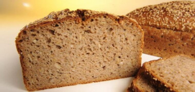
Familienbrot-Saatenfrisch
Zutaten: Wasser, WEIZENVOLLKORNMEHL*, ROGGENVOLLKORNMEHL*, WEIZENSCHROT*, Kartoffelflocken*, Meersalz, SESAM*, HAFER*, HEFE*, ROGGENSCHROT*, Kürbiskerne*, Sonnenblumenkerne*, Leinsamen braun*, Leinsamen, goldgelb*, KAMUT® KHORASAN WEIZENSCHROT*, Hirse*, DINKELSCHROT* ², Naturreis*, GERSTE*, Mohn*, Buchweizen*, Quinoa*, GERSTENMALZMEHL*, ROGGEN Starter* (ROGGENSCHROT*, Wasser, ROGGENMEHL*, Trockenglucose*, Lactobacillaceae). ²=(UR-WEIZEN)*aus kontrolliert ökologischer Erzeugung

Kartoffelbrot
Zutaten: Wasser, WEIZENMEHL TYPE 550*, Kartoffeln*, Kartoffelflocken*, DINKELVOLLKORNMEHL* ², Meersalz, NATURABACK*, BIOHEFE*, DINKEL StartGut® Bio* (Dinkelschrot* ², Dinkelmehl* ², Wasser Meersalz, Lactobacillaceae). ²= (UR-WEIZEN)*aus kontrolliert ökologischer Erzeugung
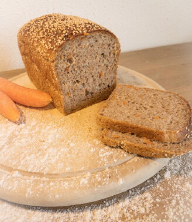
Moehrenbrot
Zutaten: Wasser, DINKELVOLLKORNMEHL* ², Möhren*, DINKELMEHL TYP 812* ², DINKELSCHROT* ², Kartoffelflocken*, Meersalz, HEFE*, SESAM*, DINKEL Starter* (DINKELschrot* ², DINKELmehl* ², Wasser Meersalz, Lactobacillaceae). ² = (UR-Weizen)*aus kontrolliert ökologischer Erzeugung
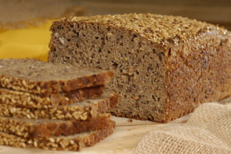
Dinkel-Schrotling
Zutaten: Wasser, DINKELVOLLKORNMEHL* ², DINKELSCHROT* ², Leinsamen braun*, Meersalz, Leinsamen, goldgelb*, BIOHEFE*, DINKEL StartGut® Bio* (Dinkelschrot* ², Dinkelmehl* ², Wasser Meersalz, Lactobacillaceae). ²= (UR-WEIZEN)*aus kontrolliert ökologischer Erzeugung
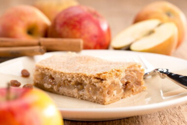
Apfelkuchen-mit-Zimtdecke
Zutaten: Apfel*, Apfelmark*, Backmargarine* (Palmöl*, Kokosöl*, Wasser, Sonnenblumenöl*, Zitronensaft*, Meerspeisesalz), DINKELMEHL TYP 812* ², Rohrohrzucker*, DINKELVOLLKORNMEHL* ², Sojadrink natural (Wasser*, SOJAbohnen*[8%]), Sultaninen*, HASELNüSSE*, Maisstärke*, Zimt*, Meersalz. ²= (UR-WEIZEN)*aus kontrolliert ökologischer Erzeugung
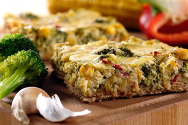
Brokkoli-Quiche
Zutaten: Brokkoli*, EIER*, SAHNE*, CREME FRAICHE*, DINKELVOLLKORNMEHL* ², Paprika*, Zuckermais*, Gouda gerieben (KuhMILCH*, Salz, mikrobielles Lab, Maisstärke*), Wasser, Kartoffelflocken*, Ziehmargarine* (Palmöl*, Sonnenblumenöl*, Wasser, Zitronensaftkonzentrat*, Salz, Karottensaftkonzentrat*.), Schnittlauch*, Petersilie*, Kräutersalz (Meersalz, Zwiebeln*, Petersilie*, Karotten*,Liebstöckel*,Rosmarin*), ÖBM * ² (BRÖTCHENBACKMITTEL*: DINKELmehl*², Malzmehl* [GERSTE, DINKEL²], LUPINENmehl*, Zucker*, Acerolapulver*. ), HEFE*, Knoblauch*, Meersalz, Backmargarine* (Palmöl*, Kokosöl*, Wasser, Sonnenblumenöl*, Zitronensaft*, Meerspeisesalz), Pfeffer*. ²= (UR-WEIZEN)*aus kontrolliert ökologischer Erzeugung
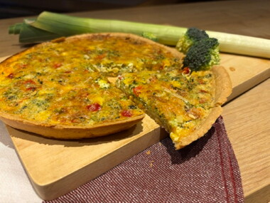
Gemuese-Quiche-rund
Zutaten: DINKELMEHL TYP 812* ², Brokkoli*, EIER*, SAHNE*, CREME FRAICHE*, BUTTER*, Paprika*, Zuckermais*, GOUDA* (KUHMILCH*, Salz, mikrobielles Lab, Maisstärke*), MILCH*, Kartoffelflocken*, Schnittlauch*, Petersilie*, Meersalz, Kräutersalz (Meersalz, Zwiebeln*, Petersilie*, Karotten*,Liebstöckel*,Rosmarin*), Knoblauch*, Pfeffer*. ²= (UR-WEIZEN)*aus kontrolliert ökologischer Erzeugung
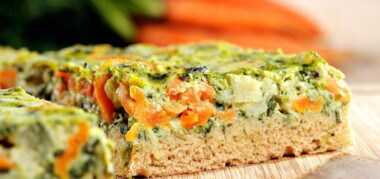
Quiche-´4-Gemuese´
Zutaten: EIER*, Zucchini*, Kohlrabi*, Möhren*, DINKELVOLLKORNMEHL* ², Spinat*, CREME FRAICHE*, SAHNE*, Zwiebeln*, Wasser, FRISCHKäSE*, Kartoffelflocken*, Ziehmargarine* (Palmöl*, Sonnenblumenöl*, Wasser, Zitronensaftkonzentrat*, Salz, Karottensaftkonzentrat*.), Meersalz, Maisstärke*, HEFE*, ÖBM * ² (BRÖTCHENBACKMITTEL*: DINKELmehl*², Malzmehl* [GERSTE, DINKEL²], LUPINENmehl*, Zucker*, Acerolapulver*. ), Backmargarine* (Palmöl*, Kokosöl*, Wasser, Sonnenblumenöl*, Zitronensaft*, Meerspeisesalz), Pfeffer*, Kräutersalz (Meersalz, Zwiebeln*, Petersilie*, Karotten*,Liebstöckel*,Rosmarin*), Muskat*. ²= (UR-WEIZEN)*aus kontrolliert ökologischer Erzeugung
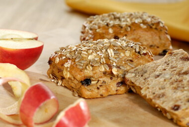
Apfel-Nuss-Happen
Zutaten: WEIZENVOLLKORNMEHL*, Wasser, Sultaninen*, WEIZENMEHL TYPE 550*, Apfel*, HASELNüSSE*, HAFERFLOCKEN*, HEFE*, SESAM*, ÖBM * ² (BRÖTCHENBACKMITTEL*: DINKELmehl*², Malzmehl* [GERSTE, DINKEL²], LUPINENmehl*, Zucker*, Acerolapulver*. ), Meersalz, WEIZENSCHROT*, HAFER*, ROGGENSCHROT*, Leinsamen braun*, Kürbiskerne*, Sonnenblumenkerne*, DINKELSCHROT* ², Hirse*, GERSTE*, KAMUT® KHORASAN WEIZENSCHROT*, Naturreis*, Kartoffelflocken*, Mohn*, Buchweizen*, Quinoa*, GERSTENMALZMEHL*. ²= (UR-WEIZEN)*aus kontrolliert ökologischer Erzeugung
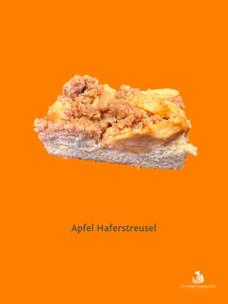
Apfel-Haferstreusel
Zutaten: Apfel*, DINKELMEHL TYP 812* ², Rohrohrzucker*, Ziehmargarine* (Palmöl*, Sonnenblumenöl*, Wasser, Zitronensaftkonzentrat*, Salz, Karottensaftkonzentrat*.), EIER*, DINKELVOLLKORNMEHL* ², Backmargarine* (Palmöl*, Sonnenblumenöl*, Wasser, Zitronensaftkonzentrat*, Karottensaftkonzentrat*, Salz), HAFERFLOCKEN*, Weinsteinbackpulver (Säuerungsmittel [Monokaliumtartrat], Backtriebmittel [Natriumhydrogencarbonat], Maisstärke*), Zimt*. ²= (UR-WEIZEN)*aus kontrolliert ökologischer Erzeugung
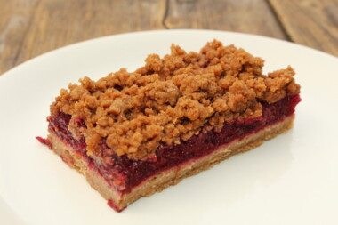
Kirsch-Nougat-Streusel-v
Zutaten: Sauerkirschen*, Wasser, DINKELVOLLKORNMEHL* ², Backmargarine* (Palmöl*, Kokosöl*, Wasser, Sonnenblumenöl*, Zitronensaft*, Meerspeisesalz), NUSSNOUGAT* (Rohrohrzucker*, HASELNÜSSE*, Kakaomasse*, Kakaobutter*), Rohrohrzucker*, DINKELMEHL TYP 812* ², Maisstärke*, Weinsteinbackpulver (Säuerungsmittel [Monokaliumtartrat], Backtriebmittel [Natriumhydrogencarbonat], Maisstärke*), Meersalz. ²= (UR-WEIZEN)*aus kontrolliert ökologischer Erzeugung
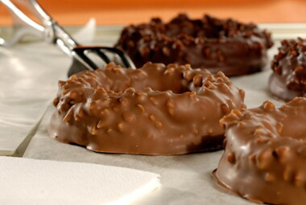
Nougat-Buttercremering-Vo
Zutaten: VOLLMILCHKUVERTÜRE* (Rohrohrzucker*, Kakaobutter*, VOLLMILCHPULVER*, Kakaomasse* [Kakaoanteil mind. 39%], Vanille*), NUSSNOUGAT* (Rohrohrzucker*, HASELNÜSSE*, Kakaomasse*, Kakaobutter*), BUTTER*, Backmargarine* (Palmöl*, Kokosöl*, Wasser, Sonnenblumenöl*, Zitronensaft*, Meerspeisesalz), DINKELMEHL TYP 812* ², HASELNüSSE*, DINKELVOLLKORNMEHL* ², Rohrohrzucker*, Meersalz. ²= (UR-WEIZEN)*aus kontrolliert ökologischer Erzeugung
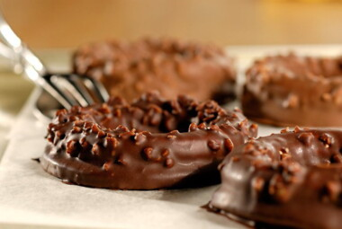
Nougat-Buttercremering-Za
Zutaten: Zartbitterkuvertüre* (Kakaomasse*, Rohrohrzucker*, Kakaobutter*, Vanillepulver*. [Kakaoanteil mind. 57%]), NUSSNOUGAT* (Rohrohrzucker*, HASELNÜSSE*, Kakaomasse*, Kakaobutter*), BUTTER*, Backmargarine* (Palmöl*, Kokosöl*, Wasser, Sonnenblumenöl*, Zitronensaft*, Meerspeisesalz), DINKELMEHL TYP 812* ², HASELNüSSE*, DINKELVOLLKORNMEHL* ², Rohrohrzucker*, Meersalz. ²= (UR-WEIZEN)*aus kontrolliert ökologischer Erzeugung
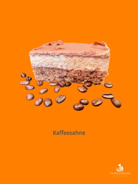
Kaffeesahne
Zutaten: SAHNE*, Rohrohrzucker*, MILCH*, DINKELVOLLKORNMEHL* ², VOLLMILCHKUVERTÜRE* (Rohrohrzucker*, Kakaobutter*, VOLLMILCHPULVER*, Kakaomasse* [Kakaoanteil mind. 39%], Vanille*), EIER*, HASELNÜSSE*, BUTTER*, Wasser, Schokotropfen (Kakaomasse*, Rohrohrzucker*, Kakaobutter*, Bourbon-Vanilleextrakt*. [Kakaoanteil mind. 59%]), VOLLMILCHKUVERTÜRE* (Rohrohrzucker*, Kakaobutter*, VOLLMILCHPULVER*, Kakaomasse*. [Kakaoanteil mind. 41%]), Maisstärke*, Weinsteinbackpulver (Säuerungsmittel [Monokaliumtartrat], Backtriebmittel [Natriumhydrogencarbonat], Maisstärke*), Kaffee*, Gelatine*, Vanille*. ²= (UR-WEIZEN)*aus kontrolliert ökologischer Erzeugung
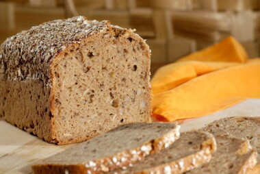
Dinkel-Alles-Drin
Zutaten: Wasser, DINKELVOLLKORNMEHL* ², DINKELSCHROT* ², Leinsamen braun*, SESAM*, Hirse*, Sonnenblumenkerne*, Meersalz, DINKEL* ², DINKEL StartGut® Bio* (Dinkelschrot* ², Dinkelmehl* ², Wasser Meersalz, Lactobacillaceae). ²= (UR-WEIZEN)*aus kontrolliert ökologischer Erzeugung
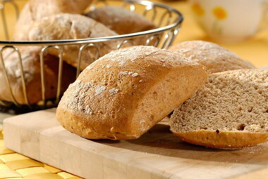
Dinkelbroetchen
Zutaten: DINKELvollkornmehl*², Wasser, DINKELvorteig* (DINKELmehl Type 812*², Wasser, Biohefe*), BRÖTCHENBACKMITTEL* (DINKELmehl*², MALZMEHL* aus GERSTE u. DINKEL², LUPINENmehl*, Zucker*, Acerolapulver*), Biohefe*, Meersalz, Rapskernöl*. ²= (UR-WEIZEN)*aus kontrolliert ökologischer Erzeugung
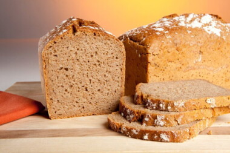
Einkorn-Pur
Zutaten: Wasser, EINKORNVOLLKORNMEHL* ², EINKORNVOLLKORNSCHROT* ², DINKELVOLLKORNMEHL* ², Meersalz, BIOHEFE*, DINKEL StartGut® Bio* (Dinkelschrot* ², Dinkelmehl* ², Wasser Meersalz, Lactobacillaceae). ²= (UR-WEIZEN)*aus kontrolliert ökologischer Erzeugung
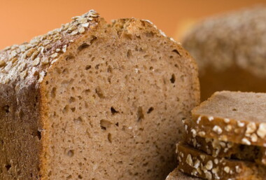
Hafer-Dinkel
Zutaten: Wasser, DINKELVOLLKORNMEHL* ², HAFER*, Meersalz, HAFERFLOCKEN*, BIOHEFE*, DINKEL StartGut® Bio* (Dinkelschrot* ², Dinkelmehl* ², Wasser Meersalz, Lactobacillaceae). ²= (UR-WEIZEN)*aus kontrolliert ökologischer Erzeugung
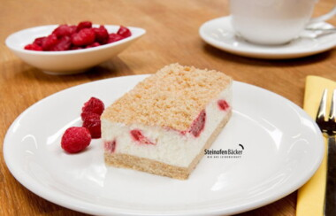
Himbeer-Spekuscrumble
Zutaten: FRISCHKÄSE*, JOGHURT*, SAHNE*, Rohrohrzucker*, Backmargarine* (Palmöl*, Kokosöl*, Wasser, Sonnenblumenöl*, Zitronensaft*, Meerspeisesalz), Himbeeren*, DINKELVOLLKORNMEHL* ², DINKELMEHL TYP 812* ², Heidelbeeren*, Johannisbeeren*, Brombeeren*, EIER*, Maisstärke*, Gelatine*, Weinsteinbackpulver (Säuerungsmittel [Monokaliumtartrat], Backtriebmittel [Natriumhydrogencarbonat], Maisstärke*), Meersalz, Spekulatiusgewürz* (Rohrohrzucker*, Vollrohrzucker*, Zimt*, Meersalz, Kardamom*, Nelken*, Muskatnuss*), Vanille*. ²= (UR-WEIZEN)*aus kontrolliert ökologischer Erzeugung
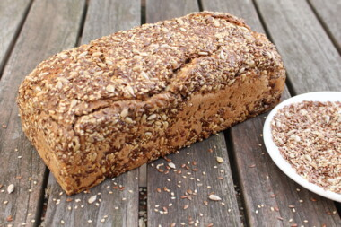
Korn-an-Korn
Zutaten: Wasser, ROGGENVOLLKORNMEHL*, Leinsamen braun*, SESAM*, Sonnenblumenkerne*, ROGGEN*, Meersalz, BIOHEFE*, ROGGEN StartGut® Bio* (ROGGENschrot*, Wasser, ROGGENmehl*, Trockenglucose*, Lactobacillaceae)*aus kontrolliert ökologischer Erzeugung
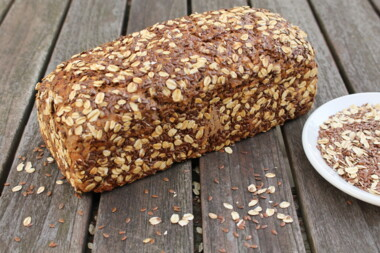
Kornkoenig
Zutaten: Wasser, ROGGENVOLLKORNMEHL*, HAFER*, Leinsamen braun*, Sonnenblumenkerne*, ROGGENFLOCKEN*, Meersalz, BIOHEFE*, ROGGEN StartGut® Bio* (ROGGENschrot*, Wasser, ROGGENmehl*, Trockenglucose*, Lactobacillaceae)*aus kontrolliert ökologischer Erzeugung
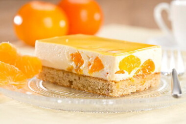
Mandarinen-Schmand-Schnit
Zutaten: SCHMAND*, Mandarinen*, MILCH*, Rohrohrzucker*, EIER*, BUTTER*, DINKELMEHL TYP 812* ², DINKELVOLLKORNMEHL* ², Maisstärke*, MANDELN*, CASHEW*, Gelatine*, Zitronensaft *, Weinsteinbackpulver (Säuerungsmittel [Monokaliumtartrat], Backtriebmittel [Natriumhydrogencarbonat], Maisstärke*), Agar Agar, Vanille*. ²= (UR-WEIZEN)*aus kontrolliert ökologischer Erzeugung
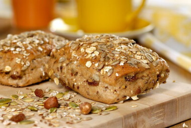
Mueslibroetchen
Zutaten: WEIZENvollkornmehl u. -schrot*, Rosinen*, Wasser, WEIZENvorteig* (WEIZENmehl Type 550*, Wasser, Biohefe*), HASELNÜSSE*, WEIZENmehl Type 550*, Biohefe*, BRÖTCHENBACKMITTEL* (DINKELmehl*², MALZMEHL* aus GERSTE u. DINKEL², LUPINENmehl*, Zucker*, Acerolapulver*), Meersalz, ROGGENvollkornschrot*, Rapskernöl*, HAFER*, Sonnenblumenkerne*, Leinsamen*, SESAM*, Kürbiskerne*, Meersalz, Hirse*, Mohn*, DINKELvollkornschrot*², KAMUT® Khorasan Weizenvollkornschrot*, GERSTE*, Reis*, Quinoa*, Buchweizen*. ²= (UR-WEIZEN)*aus kontrolliert ökologischer Erzeugung
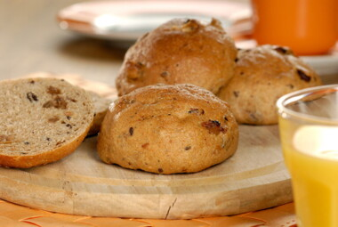
Rosinenbroetchen,-rund
Zutaten: Wasser, Sultaninen*, WEIZENMEHL TYPE 550*, WEIZENVOLLKORNMEHL*, BUTTER*, Rohrohrzucker*, HEFE*, ÖBM * ² (BRÖTCHENBACKMITTEL*: DINKELmehl*², Malzmehl* [GERSTE, DINKEL²], LUPINENmehl*, Zucker*, Acerolapulver*. ), WEIZENSCHROT*, Meersalz, WEIZENGLUTEN*, HAFER*, ROGGENSCHROT*, SESAM*, Kürbiskerne*, Sonnenblumenkerne*, Leinsamen braun*, DINKELSCHROT* ², Hirse*, KAMUT® KHORASAN WEIZENSCHROT*, GERSTE*, Naturreis*, Mohn*, Quinoa*, Buchweizen*, GERSTENMALZMEHL*. ²= (UR-WEIZEN)*aus kontrolliert ökologischer Erzeugung
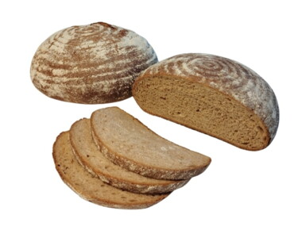
rustikales-Roggenmisch
Zutaten: Wasser, ROGGENVOLLKORNMEHL*, WEIZENMEHL TYPE 550*, GERSTENMALZ*, DBM*² (DINKEL-Backmittel*²: DINKELmehl*², Meersalz, Zucker*, GERSTENmalzmehl*, Acerolasaftkonzentrat*, Tapiokastärke*), WEIZENGLUTEN*, HEFE*, WEIZENQUELLMEHL*, Meersalz, ROGGEN Starter* (ROGGENschrot*, Wasser, ROGGENmehl*, Trockenglucose*, Lactobacillaceae). ²= (UR-WEIZEN)*aus kontrolliert ökologischer Erzeugung
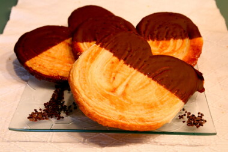
Schweineoehrchen
Zutaten: WEIZENMEHL TYPE 550*, Ziehmargarine* (Palmöl*, Sonnenblumenöl*, Wasser, Zitronensaftkonzentrat*, Salz, Karottensaftkonzentrat*.), Wasser, Zartbitterkuvertüre* (Kakaomasse*, Rohrohrzucker*, Kakaobutter*, Vanillepulver*. [Kakaoanteil mind. 57%]), Rohrohrzucker*, Backmargarine* (Palmöl*, Kokosöl*, Wasser, Sonnenblumenöl*, Zitronensaft*, Meerspeisesalz), Meersalz.*aus kontrolliert ökologischer Erzeugung
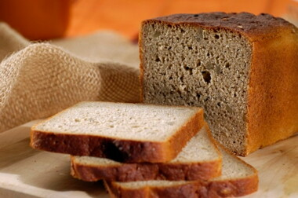
Buchweizenbrot
Zutaten: Wasser, Reismehl*, Buchweizenmehl*, SOJAMEHL*, Sonnenblumenkerne*, Melassehefe*, Meersalz*aus kontrolliert ökologischer Erzeugung
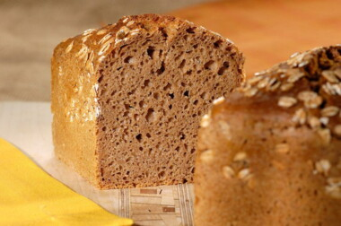
Dinkelbrot
Zutaten: DINKELVOLLKORNMEHL* ², Wasser, DINKELSCHROT* ², DINKELFLOCKEN* ², Meersalz, DINKEL StartGut® Bio* (Dinkelschrot* ², Dinkelmehl* ², Wasser Meersalz, Lactobacillaceae). ²= (UR-WEIZEN)*aus kontrolliert ökologischer Erzeugung
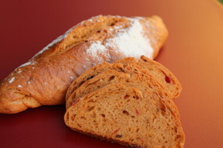
Franzoesisches-Tomatenbrot
Zutaten: WEIZENMEHL Type 550*, Wasser, Feta* (SCHAFMILCH*, ZIEGENMILCH*, Meersalz, mikrobielles Lab. Lake: Wasser, Meersalz, Zitronensaftkonzentrat*.), Paprika*, Tomatenmark*, Knoblauch*, Meersalz, BIOHEFE*, Olivenöl*, Tomaten*, Sambal Oelec* (Rote Chilis* (70%), Brantweinessig*, Meersalz, Rohrohrzucker*, Zitronensaftkonzentrat*, Verdickungsmittel: Johannisbrotkernmehl*), Thymian*, Basilikum*, Oregano*.*aus kontrolliert ökologischer Erzeugung
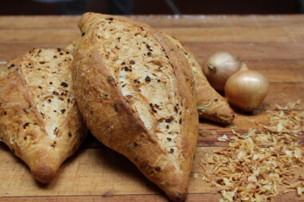
Franzoesisches-Zwiebelbrot
Zutaten: WEIZENMEHL Type 550*, Wasser, Röstzwiebeln* (Zwiebeln*, Palmfett*, WEIZENMEHL*, Speisesalz), Meersalz, BIOHEFE*, Olivenöl*.*aus kontrolliert ökologischer Erzeugung
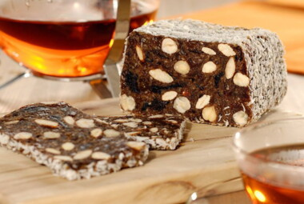
Fruechtebrot
Zutaten: Sultaninen*, Kokosnuss*, Aprikosen getrocknet*, Pflaumen*, Aprikosenkonfitüre* (Rohrohrzucker*, Aprikosen*, Geliermittel: Pektin, Säuerungsmittel: Citronensäure), HASELNüSSE*, MANDELN*, Wasser, Datteln*, Zimt**aus kontrolliert ökologischer Erzeugung
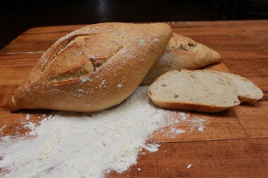
Frz.-Landbrot-Pain-Natu
Zutaten: WEIZENmehl Type 550*, Wasser, Meersalz, BIOHEFE*,Olivenöl*.*aus kontrolliert ökologischer Erzeugung
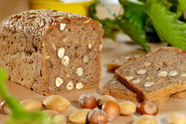
Nuss-Mandel-Brot
Zutaten: Zutatenverzeichnis:Wasser, ROGGENVOLLKORNMEHL*, WEIZENVOLLKORNMEHL*, HASELNüSSE*, MANDELN*, WEIZENSCHROT*, SESAM*, Meersalz, Kürbiskerne*, HAFER*, ROGGENSCHROT*, Sonnenblumenkerne*, Leinsamen braun*, BIOHEFE*, DINKELSCHROT* ², KAMUT® KHORASAN WEIZENSCHROT*, Hirse*, GERSTE*, Naturreis*, Mohn*, Buchweizen*, Quinoa*, GERSTENMALZMEHL*, ROGGEN StartGut® Bio* (ROGGENschrot*, Wasser, ROGGENmehl*, Trockenglucose*, Lactobacillaceae)*aus kontrolliert ökologischer Erzeugung
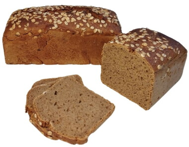
Roggenbrot
Zutaten: ROGGENVOLLKORNMEHL*, Wasser, ROGGENSCHROT*, Meersalz, ROGGENFLOCKEN*, ROGGEN StartGut® Bio* (ROGGENschrot*, Wasser, ROGGENmehl*, Trockenglucose*, Lactobacillaceae), GERSTENMALZMEHL**aus kontrolliert ökologischer Erzeugung

Rosinenbrot
Zutaten: Wasser, Sultaninen*, WEIZENVOLLKORNMEHL*, WEIZENMEHL TYPE 550*, DINKELVOLLKORNMEHL* ², BUTTER*, Rohrohrzucker*, WEIZENSCHROT*, Meersalz, HEFE*, HAFER*, ROGGENSCHROT*, SESAM*, Kürbiskerne*, Sonnenblumenkerne*, Leinsamen braun*, DINKELSCHROT* ², Hirse*, KAMUT® KHORASAN WEIZENSCHROT*, GERSTE*, Naturreis*, Mohn*, Quinoa*, Buchweizen*, GERSTENMALZMEHL*, DINKEL Starter*² (DINKELschrot* ², DINKELmehl* ², Wasser, Meersalz, Lactobacillaceae). ²= (UR-WEIZEN)*aus kontrolliert ökologischer Erzeugung
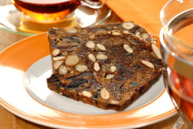
Stevertaler-Fruechtebrot
Zutaten: Sultaninen*, Feigen*, Aprikosen getrocknet*, EIER*, DINKELVOLLKORNMEHL* ², Datteln*, Pflaumen*, Sonnenblumenkerne*, Honig*, PARANUSS*, HASELNüSSE*, MANDELN*, SESAM*, Weinsteinbackpulver (Säuerungsmittel [Monokaliumtartrat], Backtriebmittel [Natriumhydrogencarbonat], Maisstärke*), Zimt*, Meersalz. ²= (UR-WEIZEN)*aus kontrolliert ökologischer Erzeugung
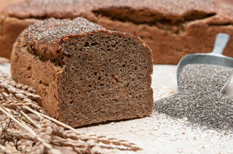
Chia-Schrotling
Zutaten: Wasser, DINKELVOLLKORNMEHL* ², Chiasamen*, DINKELSCHROT* ², Meersalz, DINKEL StartGut® Bio* (Dinkelschrot* ², Dinkelmehl* ², Wasser Meersalz, Lactobacillaceae). ²= (UR-WEIZEN)*aus kontrolliert ökologischer Erzeugung
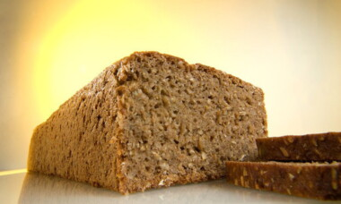
Roggen-Schrotling
Zutaten: Wasser, ROGGENSCHROT*, ROGGENVOLLKORNMEHL*, GERSTENMALZEXTRAKT*, Meersalz, GERSTENMALZMEHL*, ROGGEN StartGut® Bio* (ROGGENschrot*, Wasser, ROGGENmehl*, Trockenglucose*, Lactobacillaceae)*aus kontrolliert ökologischer Erzeugung
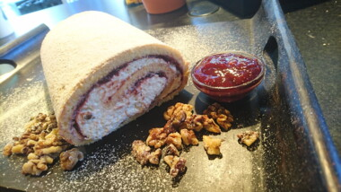
Pflaumen-Walnuss-Rolle
Zutaten: SAHNE*, Zwetschgen*, EIER*, Rohrohrzucker*, DINKELMEHL TYP 812* ², CREME FRAICHE*, WALNÜSSE*, Maisstärke*, Dekorzucker / Zierschnee (Zucker, Dextrose, Palmfett, Maisstärke), Zitronensaft *, Gelatine*, Apfelpektin, Zimt*. ²= (UR-WEIZEN)*aus kontrolliert ökologischer Erzeugung
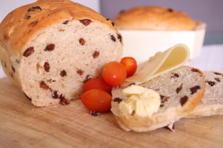
Rosinenstuten
Zutaten: WEIZENMEHL TYPE 550*, Sultaninen*, MILCH*, Rohrohrzucker*, BUTTER*, Apfelsaft*, Kartoffelflocken*, EIER* ,Melassehefe*, ÖBM * ² (BACKMITTEL: DINKELmehl*², Malzmehl* [GERSTE, DINKEL], LUPINENmehl*, Zucker*, Acerolapulver*. ), Meersalz, Zitronenschalenpaste* (Rübenzucker*, Zitronen*, Zitronensaft*, Zitronenöl*), Vanille. ²= (UR-WEIZEN)*aus kontrolliert ökologischer Erzeugung
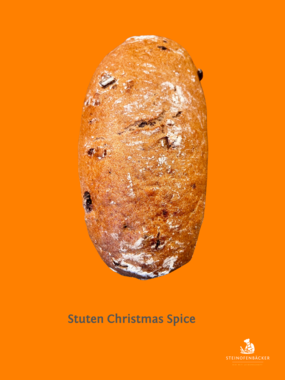
Stuten-Christmas-Spice
Zutaten: Wasser, WEIZENMEHL TYPE 550*, ROGGENVOLLKORNMEHL*, Datteln* (Datteln*, Reismehl*), WALNÜSSE*, ÖBM * ² (BRÖTCHENBACKMITTEL*²: DINKELmehl*², MALZmehl* [GERSTE, DINKEL²], LUPINENMEHL*, Zucker*, Acerolapulver*. ), HEFE*, Meersalz, Zimt*, Nelken*, Muskat*, Koriander*, Pfeffer*, Ingwer*, Kardamom*. * ² = (UR-Weizen)*aus kontrolliert ökologischer Erzeugung
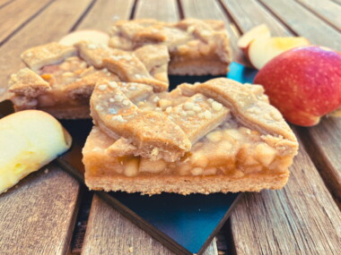
Apfelkuchen-Gitter
Zutaten: Apfel*, Rohrohrzucker*, Backmargarine* (Palmöl*, Kokosöl*, Wasser, Sonnenblumenöl*, Zitronensaft*, Meerspeisesalz), DINKELMEHL TYP 812* ², DINKELVOLLKORNMEHL* ², Hagelzucker*, Aprikosenkonfitüre* (Rohrohrzucker*, Aprikosen*, Geliermittel: Pektin, Säuerungsmittel: Citronensäure), Maisstärke*, Zitronensaft *, Wasser, Weinsteinbackpulver (Säuerungsmittel [Monokaliumtartrat], Backtriebmittel [Natriumhydrogencarbonat], Maisstärke*), Maisquellstärke*, Meersalz, Vanille*. ²=UR-WEIZEN ²= (UR-WEIZEN)*aus kontrolliert ökologischer Erzeugung
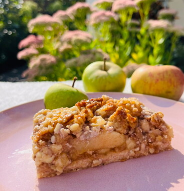
Apfelkuchen-Nuss-Caramel
Zutaten: Apfel*, Apfelmark*, Rohrohrzucker*, Backmargarine* (Palmöl*, Kokosöl*, Wasser, Sonnenblumenöl*, Zitronensaft*, Meerspeisesalz), DINKELMEHL TYP 812* ², DINKELVOLLKORNMEHL* ², WALNüSSE*, CASHEW*, Aprikosenkonfitüre* (Rohrohrzucker*, Aprikosen*, Geliermittel: Pektin, Säuerungsmittel: Citronensäure), SAHNE*, Maisstärke*, BUTTER*, Wasser, Zimt*, Meersalz. ²= (UR-WEIZEN)*aus kontrolliert ökologischer Erzeugung
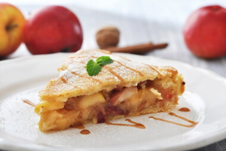
Apple-Pie
Zutaten: Apfel*, Rohrohrzucker*, MILCH*, Backmargarine* (Palmöl*, Kokosöl*, Wasser, Sonnenblumenöl*, Zitronensaft*, Meerspeisesalz), DINKELMEHL TYP 812* ², DINKELVOLLKORNMEHL* ², Maisstärke*, EIER*, Zitronensaft *, Meersalz, Vanille*. ²= (UR-WEIZEN)*aus kontrolliert ökologischer Erzeugung

Der-klassische-Kaesekuchen
Zutaten: EIER*, SAHNE*, QUARK*, CREME FRAICHE*, Rohrohrzucker*, Käsekuchenkonzentrat* (Glucosesirup* getrocknet, Maisstärke*, Maisquellstärke*, Verdickungsmittel Johannisbrotkernmehl*, Meersalz, Backtriebmittel: Natriumkarbonate, und Kaliumtartrate, (Weinsteinbackpulver), Bourbon Vanille Extrakt*), FRISCHKäSE*, DINKELMEHL TYP 812*², Backmargarine* (Palmöl*, Kokosöl*, Wasser, Sonnenblumenöl*, Zitronensaft*, Meerspeisesalz), DINKELVOLLKORNMEHL*², Aprikosenkonfitüre* (Rohrohrzucker*, Aprikosen*, Geliermittel: Pektin, Säuerungsmittel: Citronensäure), Wasser, Maisstärke*, Meersalz, Agar Agar, Vanille*. ²= (UR-WEIZEN)*aus kontrolliert ökologischer Erzeugung
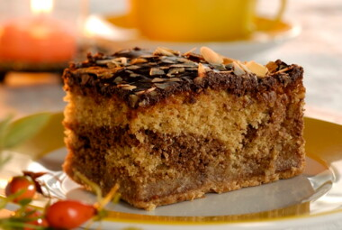
gefuellter-Mandelkuchen
Zutaten: Rohrohrzucker*, BUTTER*, EIER*, DINKELVOLLKORNMEHL* ², MANDELN*, Zartbitterkuvertüre* (Kakaomasse*, Rohrohrzucker*, Kakaobutter*, Vanillepulver*. [Kakaoanteil mind. 57%]), HONIGMARZIPAN* (MANDELN* (52% absolut), Bienenhonig*, Wasser), Weinsteinbackpulver (Säuerungsmittel [Monokaliumtartrat], Backtriebmittel [Natriumhydrogencarbonat], Maisstärke*), Wasser, Kakaopulver*, Meersalz, Vanille*. ²= (UR-WEIZEN)*aus kontrolliert ökologischer Erzeugung
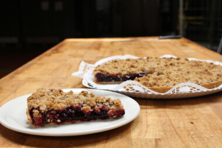
Johannisbeer-Pie
Zutaten: Johannisbeeren*, Rohrohrzucker*, DINKELVOLLKORNMEHL* ², Backmargarine* (Palmöl*, Kokosöl*, Wasser, Sonnenblumenöl*, Zitronensaft*, Meerspeisesalz), DINKELMEHL TYP 812* ², Zitronensaft *, Apfelpektin, Meersalz. ²= (UR-WEIZEN)*aus kontrolliert ökologischer Erzeugung
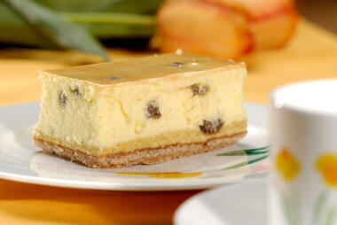
Kaesekuchen-mit-Rosinen
Zutaten: QUARK*, SAHNE*, Käsekuchenkonzentrat* (Glucosesirup* getrocknet, Maisstärke*, Maisquellstärke*, Verdickungsmittel Johannisbrotkernmehl*, Meersalz, Backtriebmittel: Natriumkarbonate, und Kaliumtartrate, (Weinsteinbackpulver), Bourbon Vanille Extrakt*), EIER*, Rohrohrzucker*, Sultaninen*, Backmargarine* (Palmöl*, Kokosöl*, Wasser, Sonnenblumenöl*, Zitronensaft*, Meerspeisesalz), DINKELMEHL TYP 812* ², DINKELVOLLKORNMEHL* ², Wasser, Meersalz, Agar Agar. ²= (UR-WEIZEN)*aus kontrolliert ökologischer Erzeugung
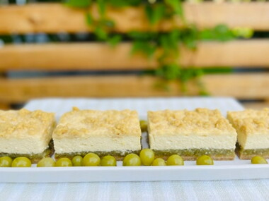
Kaesekuchen-Stachelbeere
Zutaten: QUARK*, Stachelbeeren*, SAHNE*, Rohrohrzucker*, Käsekuchenkonzentrat* (Glucosesirup* getrocknet, Maisstärke*, Maisquellstärke*, Verdickungsmittel Johannisbrotkernmehl*, Meersalz, Backtriebmittel: Natriumkarbonate, und Kaliumtartrate, (Weinsteinbackpulver), Bourbon Vanille Extrakt*), DINKELMEHL TYP 812* ², EIER*, MILCH*, Backmargarine* (Palmöl*, Sonnenblumenöl*, Wasser, Zitronensaftkonzentrat*, Karottensaftkonzentrat*, Salz), DINKELVOLLKORNMEHL* ², Wasser, BUTTER*, Maisstärke*, Vanille*, Meersalz, Weinsteinbackpulver (Säuerungsmittel [Monokaliumtartrat], Backtriebmittel [Natriumhydrogencarbonat], Maisstärke*). ²= (UR-WEIZEN)*aus kontrolliert ökologischer Erzeugung
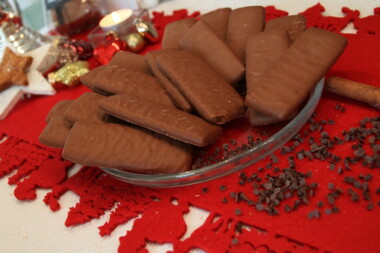
Lebkuchen,-Vollmilch
Zutaten: DINKELVOLLKORNMEHL* ², VOLLMILCHKUVERTÜRE* (Rohrohrzucker*, Kakaobutter*, VOLLMILCHPULVER*, Kakaomasse* [Kakaoanteil mind. 39%], Vanille*), Zuckerrübensirup*, BUTTER*, Rohrohrzucker*, EIER*, Lebkuchengewürz* (Zimt*, Anis*, Piment*, Koriander*, Nelke*, Ingwer*), Weinsteinbackpulver (Säuerungsmittel [Monokaliumtartrat], Backtriebmittel [Natriumhydrogencarbonat], Maisstärke*), Meersalz. ²= (UR-WEIZEN)*aus kontrolliert ökologischer Erzeugung
Lebkuchen,-Zartbitter
Zutaten: DINKELVOLLKORNMEHL* ², Zartbitterkuvertüre* (Kakaomasse*, Rohrohrzucker*, Kakaobutter*, Vanillepulver*. [Kakaoanteil mind. 57%]), Zuckerrübensirup*, BUTTER*, Rohrohrzucker*, EIER*, Lebkuchengewürz* (Zimt*, Anis*, Piment*, Koriander*, Nelke*, Ingwer*), Weinsteinbackpulver (Säuerungsmittel [Monokaliumtartrat], Backtriebmittel [Natriumhydrogencarbonat], Maisstärke*), Meersalz. ²= (UR-WEIZEN)*aus kontrolliert ökologischer Erzeugung
Mandel-Kirschlebkuchen
Zutaten: MANDELN*, Zartbitterkuvertüre* (Kakaomasse*, Rohrohrzucker*, Kakaobutter*, Vanillepulver*. [Kakaoanteil mind. 55%]), Rohrohrzucker*, EIKLAR*, Rosinen*, Sauerkirschkonfitüre* (Rohrohrzucker*, Sauerkirschen*, Geliermittel: Apfelpektin, Säuerungsmittel: Citronensäure), Zitronenschale*, WEISSE Kuvertüre* (Rohrohrzucker*, Kakaobutter*, VollMILCHpulver*), Lebkuchengewürz* (Zimt*, Anis*, Piment*, Koriander*, Nelke*, Ingwer*).*aus kontrolliert ökologischer Erzeugung
Mandelkuchen
Zutaten: Rohrohrzucker*, DINKELMEHL TYP 812* ², EIER*, Wasser, Rapskernöl*, MANDELN*, Weinsteinbackpulver (Säuerungsmittel [Monokaliumtartrat], Backtriebmittel [Natriumhydrogencarbonat], Maisstärke*). ²=(UR-WEIZEN)*aus kontrolliert ökologischer Erzeugung
Sandkuchen-Stracciatella
Zutaten: DINKELMEHL TYP 812* ², EIER*, BUTTER*, Rohrohrzucker*, Schokosplitter* (Kakaomasse*, Rohrohrzucker*, Kakaobutter*, Bourbon-Vanilleextrakt*. [Kakaoanteil mind. 60%]), Zartbitterkuvertüre* (Kakaomasse*, Rohrohrzucker*, Kakaobutter*, Vanillepulver*. [Kakaoanteil mind. 57%]), Weinsteinbackpulver (Säuerungsmittel [Monokaliumtartrat], Backtriebmittel [Natriumhydrogencarbonat], Maisstärke*), Meersalz. ²= (UR-WEIZEN)*aus kontrolliert ökologischer Erzeugung
Sandkuchen-Walnuss-Apfel
Zutaten: DINKELMEHL TYP 812* ², EIER*, BUTTER*, Rohrohrzucker*, WALNüSSE*, Apfel*, Aprikosenkonfitüre* (Rohrohrzucker*, Aprikosen*, Geliermittel: Pektin, Säuerungsmittel: Citronensäure), Weinsteinbackpulver (Säuerungsmittel [Monokaliumtartrat], Backtriebmittel [Natriumhydrogencarbonat], Maisstärke*), Meersalz. ²= (UR-WEIZEN)*aus kontrolliert ökologischer Erzeugung
Sandkuchen-Zitrone
Zutaten: EIER*, DINKELMEHL TYP 812* ², BUTTER*, Rohrohrzucker*, Aprikosenkonfitüre* (Rohrohrzucker*, Aprikosen*, Geliermittel: Pektin, Säuerungsmittel: Citronensäure), Fondant* (Saccharose*, Glucosesirup*, Wasser), Zitronenschalenpaste* (Rübenzucker*, Zitronen*, Zitronensaft*, Zitronenöl*), Weinsteinbackpulver (Säuerungsmittel [Monokaliumtartrat], Backtriebmittel [Natriumhydrogencarbonat], Maisstärke*), Meersalz. ²= (UR-WEIZEN)*aus kontrolliert ökologischer Erzeugung
Zimt-Nusskuchen
Zutaten: Rohrohrzucker*, EIER*, SAHNE*, HONIGMARZIPAN* (MANDELN* (52% absolut), Bienenhonig*, Wasser), MANDELN*, HASELNüSSE*, Backmargarine* (Palmöl*, Kokosöl*, Wasser, Sonnenblumenöl*, Zitronensaft*, Meerspeisesalz), DINKELVOLLKORNMEHL* ², Aprikosenkonfitüre* (Rohrohrzucker*, Aprikosen*, Geliermittel: Pektin, Säuerungsmittel: Citronensäure), DINKELMEHL TYP 812* ², Zitronat*, Orangeat* (Maisstärkesirup*, Orangenschale*, Meersalz), Weinsteinbackpulver (Säuerungsmittel [Monokaliumtartrat], Backtriebmittel [Natriumhydrogencarbonat], Maisstärke*), Zimt*, Meersalz, Kakaopulver*. ²= (UR-WEIZEN)*aus kontrolliert ökologischer Erzeugung
Apfel-Torte
Zutaten: Apfel*, Rohrohrzucker*, DINKELVOLLKORNMEHL* ², EIER*, CREME FRAICHE*, BUTTER*, HASELNüSSE*, Aprikosenkonfitüre* (Rohrohrzucker*, Aprikosen*, Geliermittel: Pektin, Säuerungsmittel: Citronensäure), Maisstärke*, Weinsteinbackpulver (Säuerungsmittel [Monokaliumtartrat], Backtriebmittel [Natriumhydrogencarbonat], Maisstärke*), Zimt*, Meersalz, Vanille*. * ² = (UR-Weizen)*aus kontrolliert ökologischer Erzeugung
Mousse-au-chocolat-Torte
Zutaten: SAHNE*, Rohrohrzucker*, Zartbitterkuvertüre* (Kakaomasse*, Rohrohrzucker*, Kakaobutter*, Vanillepulver*. [Kakaoanteil mind. 57%]), EIER*, DINKELMEHL TYP 812* ², Wasser, Aprikosenkonfitüre* (Rohrohrzucker*, Aprikosen*, Geliermittel: Pektin, Säuerungsmittel: Citronensäure), Backmargarine* (Palmöl*, Kokosöl*, Wasser, Sonnenblumenöl*, Zitronensaft*, Meerspeisesalz), Zartbitterkuvertüre* (Kakaomasse*, Rohrohrzucker*, Kakaobutter* [Kakaoanteil mind. 70%]), DINKELVOLLKORNMEHL* ², Rum*, Gelatine*, Maisstärke*, Kakaopulver*, Meersalz. ²= (UR-WEIZEN)*aus kontrolliert ökologischer Erzeugung
Topfen-Rosinen-Torte
Zutaten: QUARK*, SAHNE*, Käsekuchenkonzentrat* (Maisstärkesirup*, Maisstärke*, Maisquellstärke*, Verdickungsmittel [Johannisbrotkernmehl], Backtriebmittel [Natriumcarbonate, Kaliumtartrate{Weinstein}], Meersalz), Rosinen*, Rohrohrzucker*, Backmargarine* (Palmöl*, Kokosöl*, Wasser, Sonnenblumenöl*, Zitronensaft*, Meerspeisesalz), EIER*, DINKELmehl Type 812*², DINKELvollkornmehl*², Aprikosenkonfitüre* (Rohrohrzucker*, Aprikosen*, Geliermittel: Pektin, Säuerungsmittel: Citronensäure), Agar Agar, Weinsteinbackpulver (Säuerungsmittel [Monokaliumtartrat], Backtriebmittel [Natriumhydrogencarbonat], Maisstärke*), Meersalz. ²= (UR-WEIZEN)*aus kontrolliert ökologischer Erzeugung
Schoko-Muffins
Zutaten: Rohrohrzucker*, EIER*, DINKELVOLLKORNMEHL* ², DINKELMEHL TYP 812* ², BUTTER*, JOGHURT*, MILCH*, Zartbitterkuvertüre* (Kakaomasse*, Rohrohrzucker*, Kakaobutter*, Vanillepulver*. [Kakaoanteil mind. 57%]), Schokosplitter* (Kakaomasse*, Rohrohrzucker*, Kakaobutter*, Bourbon-Vanilleextrakt*. [Kakaoanteil mind. 60%]), Weinsteinbackpulver (Säuerungsmittel [Monokaliumtartrat], Backtriebmittel [Natriumhydrogencarbonat], Maisstärke*), Meersalz, Vanille*. ²= (UR-WEIZEN)*aus kontrolliert ökologischer Erzeugung
Zitronenmuffins-vegan
Zutaten: DINKELMEHL TYP 812* ², Wasser, Rohrohrzucker*, Backmargarine* (Palmöl*, Kokosöl*, Wasser, Sonnenblumenöl*, Zitronensaft*, Meerspeisesalz), Fondant* (Saccharose*, Glucosesirup*, Wasser), Aprikosenkonfitüre* (Rohrohrzucker*, Aprikosen*, Geliermittel: Pektin, Säuerungsmittel: Citronensäure), Zitronenschalenpaste* (Rübenzucker*, Zitronen*, Zitronensaft*, Zitronenöl*), SOJAMEHL*, Weinsteinbackpulver (Säuerungsmittel [Monokaliumtartrat], Backtriebmittel [Natriumhydrogencarbonat], Maisstärke*). ²= (UR-WEIZEN)*aus kontrolliert ökologischer Erzeugung
Quiche-Kuerbis
Zutaten: Hokkaido Kürbis*, DINKELMEHL TYP 812* ², CREME FRAICHE*, EIER*, BUTTER*, Zwiebeln*, GOUDA* (KUHMILCH*, Salz, mikrobielles Lab, Maisstärke*), Kürbiskerne*, MILCH*, geröstetes Kürbiskernöl*, Meersalz, Pfeffer*, Muskat*. ²= (UR-WEIZEN)*aus kontrolliert ökologischer Erzeugung
Quiche-Lorraine
Zutaten: Zwiebeln*, EIER*, DINKELMEHL TYP 812* ², BUTTER*, FRISCHKÄSE*, Schinkenspeck* (Schweinefleisch*, Meersalz, Gewürze*, Dextrose*, Acerolakirsche*, Buchenholzrauch), CREME FRAICHE*, MILCH*, Knoblauch*, Schnittlauch*, Petersilie*, Meersalz, Kräutersalz (Meersalz, Zwiebeln*, Petersilie*, Karotten*,Liebstöckel*,Rosmarin*), Pfeffer*.²= (UR-WEIZEN)*aus kontrolliert ökologischer Erzeugung
Butter-Stollen
Zutaten: DINKELMEHL TYP 812* ², Sultaninen*, BUTTER* (11,5%), Dekorzucker* (Zucker*, Dextrose*, Palmfett*, Maisstärke*), Wasser, MANDELN*, Aprikosen getrocknet*, Honig*, MILCH*, Rum*, HEFE*, EIER*, Orangenschalenpaste* (Rübenzucker*, Orangenschalen*, Zitronensaft*, Orangensaft*, Orangenöl*), Meersalz, Zimt*, Macis*, Vanille*. ²= (UR-WEIZEN)*aus kontrolliert ökologischer Erzeugung
Mozartriegel
Zutaten: HONIGMARZIPAN* (MANDELN* (52% absolut), Bienenhonig*, Wasser), Zartbitterkuvertüre* (Kakaomasse*, Rohrohrzucker*, Kakaobutter*, Vanillepulver*. [Kakaoanteil mind. 57%]), NUSSNOUGAT* (Rohrohrzucker*, HASELNÜSSE*, Kakaomasse*, Kakaobutter*), DINKELVOLLKORNMEHL* ², BUTTER*, Rohrohrzucker*, Zuckerrübensirup*, EIER*, PISTAZIEN*, Kirschwasser*, WEISSE KUVERTÜRE* (Rohrohrzucker*, Kakaobutter*, VollMILCHpulver*, Vanillepulver*), Weinsteinbackpulver (Säuerungsmittel [Monokaliumtartrat], Backtriebmittel [Natriumhydrogencarbonat], Maisstärke*), Lebkuchengewürz* (Zimt*, Anis*, Piment*, Koriander*, Nelke*, Ingwer*), Meersalz. ²= (UR-WEIZEN)*aus kontrolliert ökologischer Erzeugung
Nussriegel
Zutaten: Backmargarine* (Palmöl*, Kokosöl*, Wasser, Sonnenblumenöl*, Zitronensaft*, Meerspeisesalz), HASELNüSSE*, Zartbitterkuvertüre* (Kakaomasse*, Rohrohrzucker*, Kakaobutter*, Vanillepulver*. [Kakaoanteil mind. 55%]), Rohrohrzucker*, DINKELMEHL TYP 812* ², DINKELVOLLKORNMEHL* ², HAFERDRINK*, Agavendicksaft*, Aprikosenkonfitüre* (Rohrohrzucker*, Aprikosen*, Geliermittel: Pektin, Säuerungsmittel: Citronensäure), Meersalz. ²= (UR-WEIZEN)*aus kontrolliert ökologischer Erzeugung
Apfel-Bobbes
Zutaten: Apfel (Dunstapfel) (Äpfel*, Wasser, Citronensäure [E 330].), Rohrohrzucker*, DINKELMEHL TYP 812* ², Backmargarine* (Palmöl*, Kokosöl*, Wasser, Sonnenblumenöl*, Zitronensaft*, Meerspeisesalz), DINKELVOLLKORNMEHL* ², HASELNüSSE*, Maisquellstärke*, Kartoffelflocken*, HONIGMARZIPAN* (MANDELN* (52% absolut), Bienenhonig*, Wasser), MANDELN*, EIER*, BUTTER*, Meersalz, Weinsteinbackpulver (Säuerungsmittel [Monokaliumtartrat], Backtriebmittel [Natriumhydrogencarbonat], Maisstärke*). ²= (UR-WEIZEN)*aus kontrolliert ökologischer Erzeugung
Birne-Mohn-Bobbes
Zutaten: Rohrohrzucker*, Mohn*, DINKELMEHL TYP 812* ², MILCH*, Backmargarine* (Palmöl*, Kokosöl*, Wasser, Sonnenblumenöl*, Zitronensaft*, Meerspeisesalz), Birnen*, DINKELVOLLKORNMEHL* ², BUTTER*, Kartoffelflocken*, HONIGMARZIPAN* (MANDELN* (52% absolut), Bienenhonig*, Wasser), HASELNüSSE*, EIER*, MANDELN*, Birnen Hälften Dose 5/1 (Birnen*, Wasser, Rohrohrzucker*, Zitronensaft*.), Meersalz, Weinsteinbackpulver (Säuerungsmittel [Monokaliumtartrat], Backtriebmittel [Natriumhydrogencarbonat], Maisstärke*). ²= (UR-WEIZEN)*aus kontrolliert ökologischer Erzeugung
Blaubeer-Joghurtschnitte
Zutaten: Heidelbeeren*, SAHNE*, JOGHURT*, Rohrohrzucker*, EIER*, BUTTER*, Zitronensaft *, DINKELMEHL TYP 812* ², DINKELVOLLKORNMEHL* ², MILCH*, Wasser, Gelatine*, Weinsteinbackpulver (Säuerungsmittel [Monokaliumtartrat], Backtriebmittel [Natriumhydrogencarbonat], Maisstärke*), Maisstärke*, Vanille*. ²= (UR-WEIZEN)*aus kontrolliert ökologischer Erzeugung

Frankfurter-Schnitte
Zutaten: EIER*, Wildpreiselbeeren* (Rohrohrzucker*, Wildpreiselbeeren* [40%], Geliermittel: Pektin, Säuerungsmittel: Citronensäure.), Rohrohrzucker*, BUTTER*, MILCH*, DINKELVOLLKORNMEHL* ², SCHMAND*, Backmargarine* (Palmöl*, Kokosöl*, Wasser, Sonnenblumenöl*, Zitronensaft*, Meerspeisesalz), DINKELMEHL TYP 812* ², HASELNüSSE*, Maisstärke*, Aprikosenkonfitüre* (Rohrohrzucker*, Aprikosen*, Geliermittel: Pektin, Säuerungsmittel: Citronensäure), Weinsteinbackpulver (Säuerungsmittel [Monokaliumtartrat], Backtriebmittel [Natriumhydrogencarbonat], Maisstärke*), Meersalz, Vanille*. ²= (UR-WEIZEN)*aus kontrolliert ökologischer Erzeugung
Blaubeer-Haferstreusel
Zutaten: Heidelbeeren*, DINKELVOLLKORNMEHL* ², Backmargarine* (Palmöl*, Kokosöl*, Wasser, Sonnenblumenöl*, Zitronensaft*, Meerspeisesalz), Rohrohrzucker*, DINKELMEHL TYP 812* ², Zitronensaft *, Aprikosenkonfitüre* (Rohrohrzucker*, Aprikosen*, Geliermittel: Pektin, Säuerungsmittel: Citronensäure), Maisstärke*, HAFERFLOCKEN*, Weinsteinbackpulver (Säuerungsmittel [Monokaliumtartrat], Backtriebmittel [Natriumhydrogencarbonat], Maisstärke*), Maisquellstärke*, Wasser, Meersalz, Vanille*. ²=UR-WEIZEN*aus kontrolliert ökologischer Erzeugung
Dinkelbaguette
Zutaten: DINKELMEHL TYP 812* ², Wasser, DINKELVOLLKORNMEHL* ², HEFE*, Meersalz, ÖBM * ² (BRÖTCHENBACKMITTEL*: DINKELmehl*², Malzmehl* [GERSTE, DINKEL²], LUPINENMEHL*, Zucker*, Acerolapulver*. ), DINKEL Starter* (DINKELschrot* ², DINKELMEHL* ², Wasser Meersalz, Lactobacillaceae). ²= (UR-WEIZEN)*aus kontrolliert ökologischer Erzeugung
Kornkracher
Zutaten: Wasser, ROGGENVOLLKORNMEHL*, DINKELVOLLKORNMEHL* ², SESAM*, Buchweizen*, HAFER*, Meersalz, ROGGEN StartGut® Bio* (ROGGENschrot*, Wasser, ROGGENmehl*, Trockenglucose*, Lactobacillaceae). ²= (UR-WEIZEN)*aus kontrolliert ökologischer Erzeugung
Dinkel-Spezial
Zutaten: DINKELVOLLKORNMEHL* ², Wasser, DINKELSCHROT* ², Meersalz, DINKEL StartGut® Bio* (Dinkelschrot* ², Dinkelmehl* ², Wasser Meersalz, Lactobacillaceae). ²= (UR-WEIZEN)*aus kontrolliert ökologischer Erzeugung
Hanftaler
Zutaten: BUTTER*, Rohrohrzucker*, Hanfsamen geschält*, Zartbitterkuvertüre* (Kakaomasse*, Rohrohrzucker*, Kakaobutter*, Vanillepulver*. [Kakaoanteil mind. 55%]), Sonnenblumenkerne*, HASELNüSSE*, Kürbiskerne*, SAHNE*, Honig**aus kontrolliert ökologischer Erzeugung
Haferstangen
Zutaten: Haferstangen* (HAFERFLOCKEN*, BUTTER*, Rohrohrzucker*, EIER*, DINKELVOLLKORNMEHL* ², MANDELN*, Zartbitterkuvertüre* (Kakaomasse*, Rohrohrzucker*, Kakaobutter*, Vanillepulver*. [Kakaoanteil mind. 57%]), Wasser, Weinsteinbackpulver (Weinsäure [Säuerungsmittel], Maisstärke [Trennmittel], Natriumbicarbonat [Backtrieb]), Meersalz)*aus kontrolliert ökologischer Erzeugung
Dinkelschiffchen
Zutaten: Dinkelschiffchen Camphill (Honig, DINKELVOLLKORNMEHL* ², BUTTER*, CASHEW*, SAHNE*, Sonnenblumenkerne*, SESAM*, DINKELFLOCKEN* ², Kürbiskerne*, Sultaninen*, Weinsteinbackpulver {Weinsäure [Säuerungsmittel], Maisstärke [Trennmittel], Natriumbicarbonat [Backtrieb]}). ²= (UR-WEIZEN)*aus kontrolliert ökologischer Erzeugung
Rumkugel
Zutaten: *aus kontrolliert ökologischer Erzeugung
Amaretto-Nuss-Sahne
Zutaten: SAHNE*, Rohrohrzucker*, DINKELVOLLKORNMEHL* ², EIER*, BUTTER*, HASELNüSSE*, HONIGMARZIPAN* (MANDELN* (52% absolut), Bienenhonig*, Wasser), Wasser, Schokotropfen* (Kakaomasse*, Rohrohrzucker*, Kakaobutter*, Bourbon-Vanilleextrakt*. [Kakaoanteil mind. 59%]), MILCH*, SCHMAND*, Amaretto* (Wasser, Rohrohrzucker*, WEIZENfeindestillat*, Vollrohrzucker*, natürliches MANDELaroma, [28% vol.]), MANDELN*, Zartbitterkuvertüre* (Kakaomasse*, Rohrohrzucker*, Kakaobutter*, Vanillepulver*. [Kakaoanteil mind. 57%]), Weinsteinbackpulver (Säuerungsmittel [Monokaliumtartrat], Backtriebmittel [Natriumhydrogencarbonat], Maisstärke*), Gelatine*, Rum*, Kaffee*, Maisstärke*, VOLLMILCHKUVERTÜRE* (Rohrohrzucker*, Kakaobutter*, VOLLMILCHPULVER*, Kakaomasse*. [Kakaoanteil mind. 41%]).²= (UR-WEIZEN)*aus kontrolliert ökologischer Erzeugung
Hafer-Sahne-Trueffel
Zutaten: SAHNE*, HAFERFLOCKEN*, Honig*, Vanille**aus kontrolliert ökologischer Erzeugung
10-Korn-Schrot
Zutaten: Zutatenverzeichnis:Wasser, WEIZENVOLLKORNMEHL*, ROGGENVOLLKORNMEHL*, ROGGENSCHROT*, WEIZENSCHROT*, Naturreis*, DINKELSCHROT* ², HAFER*, KAMUT® KHORASAN WEIZENSCHROT*, Hirse*, GERSTE*, Meersalz, BIOHEFE*, Buchweizen*, Quinoa*, GERSTENMALZMEHL*, ROGGEN StartGut® Bio* (ROGGENschrot*, Wasser, ROGGENmehl*, Trockenglucose*, Lactobacillaceae). ²= (UR-WEIZEN)*aus kontrolliert ökologischer Erzeugung
1000-Koerner-Kruste
Zutaten: Wasser, WEIZENVOLLKORNMEHL*, ROGGENVOLLKORNMEHL*, WEIZENSCHROT*, HAFER*, SESAM*, ROGGENSCHROT*, Sonnenblumenkerne*, Meersalz, Kürbiskerne*, Leinsamen braun*, Mohn*, Hirse*, KAMUT® KHORASAN WEIZENSCHROT*, DINKELSCHROT* ², Naturreis*, GERSTE*, BIOHEFE*, Buchweizen*, Quinoa*, GERSTENMALZMEHL*, ROGGEN StartGut® Bio* (ROGGENschrot*, Wasser, ROGGENmehl*, Trockenglucose*, Lactobacillaceae). ²= (UR-WEIZEN)*aus kontrolliert ökologischer Erzeugung
Apfel-Walnuss-vegan
Zutaten: Apfel*, DINKELMEHL TYP 812* ², Rohrohrzucker*, SOJADRINK* (Wasser*, SOJAbohnen*[8%]), Backmargarine* (Palmöl*, Sonnenblumenöl*, Wasser, Zitronensaftkonzentrat*, Karottensaftkonzentrat*, Salz), HASELNÜSSE*, WALNÜSSE*, DINKELVOLLKORNMEHL* ², Rapskernöl*, Aprikosenkonfitüre* (Rohrohrzucker*, Aprikosen*, Geliermittel: Pektin, Säuerungsmittel: Citronensäure), Weinsteinbackpulver (Säuerungsmittel [Monokaliumtartrat], Backtriebmittel [Natriumhydrogencarbonat], Maisstärke*), Wasser, Meersalz, Zimt*. ²=UR-WEIZEN*aus kontrolliert ökologischer Erzeugung
Camelina-Roggenmisch
Zutaten: Zutatenverzeichnis:Wasser, ROGGENVOLLKORNMEHL*, WEIZENVOLLKORNMEHL*, Leindotter*, Meersalz, HEFE*, ROGGEN Starter* (ROGGENSCHROT*, Wasser, ROGGENMEHL*, Trockenglucose*, Lactobacillaceae).*aus kontrolliert ökologischer Erzeugung
Champignon-Bratling
Zutaten: Champignons*, Wasser, Zwiebeln*, HAFERFLOCKEN*, Maisgrieß*, Kartoffelflocken*, getrocknete Champignons*, Meersalz, Pfeffer*, Paprika edelsüß*, Chili*.*aus kontrolliert ökologischer Erzeugung
Dinkel-Croissant
Zutaten: DINKELMEHL TYP 812* ², Ziehmargarine* (Palmöl*, Sonnenblumenöl*, Wasser, Zitronensaftkonzentrat*, Salz, Karottensaftkonzentrat*.), Wasser, SESAM*, HEFE*, ÖBM * ² (BRÖTCHENBACKMITTEL*: DINKELmehl*², Malzmehl* [GERSTE, DINKEL²], LUPINENmehl*, Zucker*, Acerolapulver*. ), Meersalz, DINKELGLUTEN* ². ²=UR-WEIZEN*aus kontrolliert ökologischer Erzeugung
Dinkel-Nuss-Frikadelle
Zutaten: Wasser, HAFERFLOCKEN*, DINKELSCHROT* ², Möhren*, QUARK*, Zwiebeln*, Rapskernöl*, HASELNüSSE*, Schnittlauch*, SENF* (Wasser, SENFSAATEN*, Branntweinessig*, Meersalz, Gewürze*, Kräuter*), Olivenöl*, Petersilie*, SOJASAUCE* (SOJABOHNEN* (41%), Wasser, Meersalz, Mikawa Mirin* (alkoholhaltige Reis-Würzsauce*: Reis*, Wasser, Aspergillus oryzae), Aspergillus oryzae), Meersalz, Gemüsebrühe, hefefrei (Speisesalz, Reismehl, Gewürze {Pastinaken, Zwiebeln, Karotten, Curcuma}, Sonnenblumenöl), Knoblauch*, Pfeffer*. ²= (UR-WEIZEN)*aus kontrolliert ökologischer Erzeugung
Dinkel-Spekulatius
Zutaten: DINKELVOLLKORNMEHL*² (22,3%), DINKELMEHL TYPE 812*² (22,3%), Rohrohrzucker*, BUTTER*, Backmargarine* (Palmöl*, Kokosöl*, Wasser, Sonnenblumenöl*, Zitronensaft*, Meerspeisesalz), MILCH*, EIGELB*, Spekulatiusgewürz* (Rohrohrzucker, Vollrohrzucker*, Zimt*, Meersalz, Kardamom*, Nelken*, Muskatnuss*), Weinsteinbackpulver (Säuerungsmittel [Monokaliumtartrat], Backtriebmittel [Natriumhydrogencarbonat], Maisstärke*), Meersalz. ²= (UR-WEIZEN)*aus kontrolliert ökologischer Erzeugung
Dinkel-Vital
Zutaten: Wasser, DINKELVOLLKORNMEHL* ², DINKELSCHROT* ², Hirse*, Leinsamen braun*, Sonnenblumenkerne*, SESAM*, Meersalz, DINKEL StartGut® Bio* (Dinkelschrot* ², Dinkelmehl* ², Wasser Meersalz, Lactobacillaceae). ²= (UR-WEIZEN)*aus kontrolliert ökologischer Erzeugung
Dinkelroeschen
Zutaten: DINKELMEHL TYP 812* ², Wasser, DINKELVOLLKORNMEHL* ², HEFE*, DBM*² (DINKEL-Backmittel*²: DINKELmehl*², Meersalz, Zucker*, GERSTENmalzmehl*, Acerolasaftkonzentrat*, Tapiokastärke*), Meersalz, ROGGENVOLLKORNMEHL*, DINKEL Starter*² (DINKELschrot* ², DINKELmehl* ², Wasser Meersalz, Lactobacillaceae). ²= (UR-WEIZEN)*aus kontrolliert ökologischer Erzeugung
Donauwelle
Zutaten: Sauerkirschen*, BUTTER*, MILCH*, Rohrohrzucker*, EIER*, SCHMAND*, SAHNE*, Zartbitterkuvertüre* (Kakaomasse*, Rohrohrzucker*, Kakaobutter*, Vanillepulver*. [Kakaoanteil mind. 57%]), DINKELMEHL TYP 812* ², DINKELVOLLKORNMEHL* ², MANDELN*, CASHEW*, Maisstärke*, Weinsteinbackpulver (Säuerungsmittel [Monokaliumtartrat], Backtriebmittel [Natriumhydrogencarbonat], Maisstärke*), Kakaopulver*, Meersalz, Vanille*.²= (UR-WEIZEN)*aus kontrolliert ökologischer Erzeugung
Erdbeermousse
Zutaten: Erdbeeren*, SAHNE*, JOGHURT*, FRISCHKÄSE*, Rohrohrzucker*, Backmargarine* (Palmöl*, Kokosöl*, Wasser, Sonnenblumenöl*, Zitronensaft*, Meerspeisesalz), DINKELVOLLKORNMEHL* ², DINKELMEHL TYP 812* ², WEISSE KUVERTÜRE* (Rohrohrzucker*, Kakaobutter*, VOLLMILCHPULVER*), EIER*, Gelatine*, Weinsteinbackpulver (Säuerungsmittel [Monokaliumtartrat], Backtriebmittel [Natriumhydrogencarbonat], Maisstärke*), Meersalz, Vanille*. ²= (UR-WEIZEN)*aus kontrolliert ökologischer Erzeugung
Falafel
Zutaten: Wasser, Maisgrieß*, Kichererbsenmehl*, Zwiebeln*, Rapskernöl*, Möhren*, HAFERFLOCKEN*, Olivenöl*, Meersalz, Petersilie*, Agavendicksaft*, Gemüsebrühe, hefefrei (Speisesalz, Reismehl, Gewürze {Pastinaken, Zwiebeln, Karotten, Curcuma}, Sonnenblumenöl), Curry, indisch (Curcuma*, Koriander*, Rohrzucker*, Kümmel*, SELLERIE*, Knoblauch*, Pfeffer*, Ingwer*, Zimt*), Paprika edelsüß*, Kreuzkümmel*, Pfeffer*, Bohnenkraut*, Cayenne**aus kontrolliert ökologischer Erzeugung
Flocki-Preiselbeere
Zutaten: Wildpreiselbeeren* (Rohrohrzucker*, Wildpreiselbeeren* [40%], Geliermittel: Pektin, Säuerungsmittel: Citronensäure.), DINKELMEHL TYP 812* ², SAHNE*, MILCH*, EIER*, Rohrohrzucker*, BUTTER*, Backmargarine* (Palmöl*, Sonnenblumenöl*, Wasser, Zitronensaftkonzentrat*, Karottensaftkonzentrat*, Salz), SCHMAND*, DINKELVOLLKORNMEHL* ², Wasser, Aprikosenkonfitüre* (Rohrohrzucker*, Aprikosen*, Geliermittel: Pektin, Säuerungsmittel: Citronensäure), Gelatine*, Maisstärke*, Meersalz, Weinsteinbackpulver (Säuerungsmittel [Monokaliumtartrat], Backtriebmittel [Natriumhydrogencarbonat], Maisstärke*), Vanille*. ²= (UR-WEIZEN)*aus kontrolliert ökologischer Erzeugung
Florentiner
Zutaten: MANDELN*, BUTTER*, Rohrohrzucker*, Zartbitterkuvertüre* (Kakaomasse*, Rohrohrzucker*, Kakaobutter* [Kakaoanteil mind. 70%]), SAHNE*, Honig*, Orangeat (Maisstärkesirup*, Orangenschale*, Meersalz), Zitronat**aus kontrolliert ökologischer Erzeugung
Haferling
Zutaten: Zutatenverzeichnis:Wasser, DINKELVOLLKORNMEHL* ², WEIZENVOLLKORNMEHL*, HAFERFLOCKEN*, ROGGENVOLLKORNMEHL*, HAFER*, Meersalz, HEFE*, ROGGEN Starter* (ROGGENSCHROT*, Wasser, ROGGENMEHL*, Trockenglucose*, Lactobacillaceae). ²= (UR-WEIZEN)*aus kontrolliert ökologischer Erzeugung
Haselnuss
Zutaten: Wasser, WEIZENVOLLKORNMEHL*, DINKELVOLLKORNMEHL* ²,HASELNüSSE*, Kartoffelflocken*, WEIZENSCHROT*, Mohn*, HAFER*, Meersalz, ROGGENSCHROT*, WEIZENQUELLMEHL*, SESAM*, Sonnenblumenkerne*, Kürbiskerne*, Leinsamen braun*, DBM*² (DINKEL-Backmittel*²: DINKELmehl*², Meersalz, Zucker*, GERSTENmalzmehl*, Acerolasaftkonzentrat*, Tapiokastärke*), HEFE*, DINKELSCHROT* ², Hirse*, KAMUT® KHORASAN WEIZENSCHROT*, GERSTE*, Naturreis*, Buchweizen*, Quinoa*, GERSTENMALZ*, DINKEL Starter*² (DINKELschrot* ², DINKELmehl* ², Wasser Meersalz, Lactobacillaceae). ²= (UR-WEIZEN)*aus kontrolliert ökologischer Erzeugung
Lemon-Cream-cheese
Zutaten: FRISCHKäSE*, JOGHURT*, Wasser, Rohrohrzucker*, BUTTER*, EIER*, Zitronensaft *, Backmargarine* (Palmöl*, Kokosöl*, Wasser, Sonnenblumenöl*, Zitronensaft*, Meerspeisesalz), DINKELMEHL TYP 812* ², DINKELVOLLKORNMEHL* ², HASELNüSSE*, Maisstärke*, Gelatine*, Weinsteinbackpulver (Säuerungsmittel [Monokaliumtartrat], Backtriebmittel [Natriumhydrogencarbonat], Maisstärke*), Meersalz, Zitronenschalenpaste* (Rübenzucker*, Zitronen*, Zitronensaft*, Zitronenöl*), Vanille*. ²= (UR-WEIZEN)*aus kontrolliert ökologischer Erzeugung
Linzer-Mandel-Kirsch
Zutaten: Sauerkirschkonfitüre* (Rohrohrzucker*, Sauerkirschen*, Geliermittel: Pektin, Säuerungsmittel: Citronensäure.)*, MANDELN*, BUTTER*, DINKELVOLLKORNMEHL* ², Rohrohrzucker*, EIER*, Nelken*, Meersalz, Vanille*. ²= (UR-WEIZEN)*aus kontrolliert ökologischer Erzeugung
Luebecker-Makrone
Zutaten: HONIGMARZIPAN* (MANDELN* (52% absolut), Bienenhonig*, Wasser), Kokosnuss*, Rohrohrzucker*, EIER*, Zartbitterkuvertüre* (Kakaomasse*, Rohrohrzucker*, Kakaobutter*, Vanillepulver*. [Kakaoanteil mind. 57%]), Rum*, Zitronensaft **aus kontrolliert ökologischer Erzeugung
Mandel-Spekulatius
Zutaten: DINKELVOLLKORNMEHL*², DINKELMEHL TYPE 812*², Rohrohrzucker*, BUTTER*, Backmargarine* (Palmöl*, Kokosöl*, Wasser, Sonnenblumenöl*, Zitronensaft*, Meerspeisesalz), MILCH*, MANDELN* (5,3%), EIGELB*, Spekulatiusgewürz* (Rohrohrzucker, Vollrohrzucker*, Zimt*, Meersalz, Kardamom*, Nelken*, Muskatnuss*), Weinsteinbackpulver (Säuerungsmittel [Monokaliumtartrat], Backtriebmittel [Natriumhydrogencarbonat], Maisstärke*), Meersalz. ²= (UR-WEIZEN)*aus kontrolliert ökologischer Erzeugung
Mandel-Stern
Zutaten: MANDELN*, Rohrohrzucker*, EIKLAR*, Puderzucker*, Zimt*, Zitronensaft*, Vanille*, Meersalz, MEHLSTAUB*.*aus kontrolliert ökologischer Erzeugung
Mandelhoernchen
Zutaten: HONIGMARZIPAN* (MANDELN* (52% absolut), Bienenhonig*, Wasser), Rohrohrzucker*, Zartbitterkuvertüre* (Kakaomasse*, Rohrohrzucker*, Kakaobutter*, Vanillepulver*. [Kakaoanteil mind. 57%]), MANDELN*, EIER*, Reismehl**aus kontrolliert ökologischer Erzeugung
Nussecke
Zutaten: HASELNüSSE*, Honig*, BUTTER*, DINKELVOLLKORNMEHL* ², Zartbitterkuvertüre* (Kakaomasse*, Rohrohrzucker*, Kakaobutter*, Vanillepulver*. [Kakaoanteil mind. 57%]), SAHNE*, Sonnenblumenkerne*, Weinsteinbackpulver (Säuerungsmittel [Monokaliumtartrat], Backtriebmittel [Natriumhydrogencarbonat], Maisstärke*). ²= (UR-WEIZEN)*aus kontrolliert ökologischer Erzeugung
Pfauenauge
Zutaten: Sauerkirschkonfitüre* (Rohrohrzucker*, Sauerkirschen*, Geliermittel: Pektin, Säuerungsmittel: Citronensäure.), Rohrohrzucker*, Backmargarine* (Palmöl*, Kokosöl*, Wasser, Sonnenblumenöl*, Zitronensaft*, Meerspeisesalz), DINKELmehl Typ 812* ², DINKELvollkornmehl* ², EIER*, Honig-MARZIPAN* (MANDELN* (52% absolut), Bienenhonig*, Wasser), HASELNÜSSE*, Reismehl*, MANDELN*, Meersalz. ²= (UR-WEIZEN)*aus kontrolliert ökologischer Erzeugung
Pikanter-Hacksnack
Zutaten: Hackfleisch* (vom Schwein), WEIZENMEHL TYPE 550*, EIER*, Ziehmargarine* (Palmöl*, Sonnenblumenöl*, Wasser, Zitronensaftkonzentrat*, Salz, Karottensaftkonzentrat*.), Wasser, RÖSTZWIEBELN* (Zwiebeln*, Palmfett*, WEIZENMEHL*, Speisesalz), Meersalz, Rohrohrzucker*, Paprika edelsüß*, Pfeffer*, Chili*, HEFE*.*aus kontrolliert ökologischer Erzeugung
Pita-Fladen
Zutaten: WEIZENmehl Type 550*, Wasser, heller WEIZENvorteig* (WEIZENmehl Type 550*, Wasser, Biohefe*), SESAM*, Schwarzkümmel*, Biohefe*, Olivenöl*, Meersalz.*aus kontrolliert ökologischer Erzeugung
Plunderbroetchen
Zutaten: Wasser, WEIZENVOLLKORNMEHL*, WEIZENMEHL TYPE 550*, Ziehmargarine* (Palmöl*, Sonnenblumenöl*, Wasser, Zitronensaftkonzentrat*, Salz, Karottensaftkonzentrat*.), SESAM*, Sonnenblumenkerne*, Mohn*, DINKELVOLLKORNMEHL* ², WEIZENGLUTEN*, ÖBM * ² (BRÖTCHENBACKMITTEL*: DINKELmehl*², Malzmehl* [GERSTE, DINKEL²], LUPINENmehl*, Zucker*, Acerolapulver*. ), Melassehefe*, DINKELSCHROT* ², Meersalz, Hirse*, Leinsamen braun*, DINKEL Starter* (DINKELschrot* ², DINKELmehl* ², Wasser Meersalz, Lactobacillaceae). ²= (UR-WEIZEN)*aus kontrolliert ökologischer Erzeugung
Pumpkin-Spice
Zutaten: Hokkaido Kürbis*, Rohrohrzucker*, EIER*, DINKELVOLLKORNMEHL* ², Kürbiskerne*, HASELNÜSSE*, BUTTER*, Aprikosenkonfitüre* (Rohrohrzucker*, Aprikosen*, Geliermittel: Pektin, Säuerungsmittel: Citronensäure), Weinsteinbackpulver (Säuerungsmittel [Monokaliumtartrat], Backtriebmittel [Natriumhydrogencarbonat], Maisstärke*), Zimt*, Ingwer*, Kardamom*, Nelken*, Piment*, Muskat*. ²= (UR-WEIZEN)*aus kontrolliert ökologischer Erzeugung
Roestkorn
Zutaten: Wasser, WEIZENVOLLKORNMEHL*, ROGGENVOLLKORNMEHL*, SESAM*, Sonnenblumenkerne*, Kürbiskerne*, Leinsamen goldgelb*, Meersalz, BIOHEFE*, ROGGEN StartGut® Bio* (ROGGENschrot*, Wasser, ROGGENmehl*, Trockenglucose*, Lactobacillaceae).²= (UR-WEIZEN)*aus kontrolliert ökologischer Erzeugung
Roggenmisch
Zutaten: Wasser, ROGGENVOLLKORNMEHL*, WEIZENVOLLKORNMEHL*, ROGGENSCHROT*, Meersalz, BIOHEFE*, GERSTENMALZMEHL*, ROGGEN StartGut® Bio* (ROGGENschrot*, Wasser, ROGGENmehl*, Trockenglucose*, Lactobacillaceae)*aus kontrolliert ökologischer Erzeugung
Rote-Linse-Polenta-Burger
Zutaten: Wasser, Rote Linsen*, Maisgrieß*, Zwiebeln*, HAFERFLOCKEN*, Rapskernöl*, Möhren*, Tomaten*, Gemüsebrühe, hefefrei (Speisesalz, Reismehl, Gewürze {Pastinaken, Zwiebeln, Karotten, Curcuma}, Sonnenblumenöl), Olivenöl*, Schnittlauch*, Petersilie*, Kräutersalz (Meersalz, Zwiebeln*, Petersilie*, Karotten*,Liebstöckel*,Rosmarin*), Chili Sauce* (Wasser, Agavendicksaft*, Apfelsaftkonzentrat*, Branntweinessig*, rote Chili* 4 %, Tomatenmark*, Ingwer*, Tapiokastärke*, Meersalz, Verdickungsmittel (Guarkernmehl*, Johannisbrotkernmehl*), Chili gemahlen* 0,5 %, Knoblauch*, Paprikaflocken*), Pfeffer*, Meersalz, Knoblauch**aus kontrolliert ökologischer Erzeugung
Sacherkloetzchen
Zutaten: Zartbitterkuvertüre* (Kakaomasse*, Rohrohrzucker*, Kakaobutter*, Vanillepulver*. [Kakaoanteil mind. 57%]), EIER*, Rohrohrzucker*, NUSSNOUGAT* (Rohrohrzucker*, HASELNÜSSE*, Kakaomasse*, Kakaobutter*), BUTTER*, Sauerkirsch-Konfitüre* (Rohrohrzucker*, Sauerkirschen*, Geliermittel: Pektin, Säuerungsmittel: Citronensäure.), HONIGMARZIPAN* (MANDELN* (52% absolut), Bienenhonig*, Wasser), DINKELVOLLKORNMEHL* ², MANDELN*. ²= (UR-WEIZEN)*aus kontrolliert ökologischer Erzeugung

SBK-Saftkorn
Zutaten: Wasser, WEIZENVOLLKORNMEHL*, ROGGENSCHROT*, ROGGENVOLLKORNMEHL*, Sonnenblumenkerne*, Meersalz, BIOHEFE*, GERSTENMALZMEHL*, ROGGEN StartGut® Bio* (ROGGENschrot*, Wasser, ROGGENmehl*, Trockenglucose*, Lactobacillaceae)*aus kontrolliert ökologischer Erzeugung
Schwarz-Weiss-Gebaeck
Zutaten: Schwarz-Weiß-Gebäck Camphill (DINKELMEHL TYPE 630* ² , BUTTER*, Rohrohrzucker*, Wasser, Kakaopulver*, Weinsteinbackpulver (Weinsäure [Säuerungsmittel], Maisstärke [Trennmittel], Natriumbicarbonat [Backtrieb]), Meersalz, Vanille*). ²= (UR-WEIZEN)*aus kontrolliert ökologischer Erzeugung
Spitzbuben-Aprikose
Zutaten: Backmargarine* (Palmöl*,Sonnenblumenöl*, Wasser, Zitronensaftkonzentrat*, Karottensaftkonzentrat*, Salz), DINKELVOLLKORNMEHL* ², DINKELMEHL Typ 812* ², Aprikosenkonfitüre* (Rohrohrzucker*, Aprikosen*, Geliermittel: Pektin, Säuerungsmittel: Citronensäure),Rohrohrzucker*, Zartbitterkuvertüre* (Kakaomasse*, Rohrohrzucker*, Kakaobutter*, Vanillepulver*. [Kakaoanteil mind. 57%]), EIER*, Weinsteinbackpulver (Säuerungsmittel [Monokaliumtartrat], Backtriebmittel [Natriumhydrogencarbonat], Maisstärke*), Meersalz, Vanille*. ² = (UR-Weizen)*aus kontrolliert ökologischer Erzeugung
Sweetie-Orange
Zutaten: DINKELMEHL TYP 812* ², EIER*, Rohrohrzucker*, Wasser, Backmargarine* (Palmöl*, Sonnenblumenöl*, Wasser, Zitronensaftkonzentrat*, Karottensaftkonzentrat*, Salz), Fondant* (Saccharose*, Glucosesirup*, Wasser), Aprikosenkonfitüre* (Rohrohrzucker*, Aprikosen*, Geliermittel: Pektin, Säuerungsmittel: Citronensäure), Orangensaft*, Orangenschalenpaste* (Rübenzucker*, Orangenschalen*, Zitronensaft*, Orangensaft*, Orangenöl*), Weinsteinbackpulver (Säuerungsmittel [Monokaliumtartrat], Backtriebmittel [Natriumhydrogencarbonat], Maisstärke*), Vanille*, Meersalz. ²=(UR-WEIZEN)*aus kontrolliert ökologischer Erzeugung
Sweetie-Schoko
Zutaten: DINKELMEHL TYP 812* ², EIER*, Rohrohrzucker*, Wasser, Backmargarine* (Palmöl*, Sonnenblumenöl*, Wasser, Zitronensaftkonzentrat*, Karottensaftkonzentrat*, Salz), Zartbitterkuvertüre* (Kakaomasse*, Rohrohrzucker*, Kakaobutter*, Vanillepulver*. [Kakaoanteil mind. 57%]), MILCH*, Schokosplitter* (Kakaomasse*, Rohrohrzucker*, Kakaobutter*, Bourbon-Vanilleextrakt*. [Kakaoanteil mind. 60%]), Weinsteinbackpulver (Säuerungsmittel [Monokaliumtartrat], Backtriebmittel [Natriumhydrogencarbonat], Maisstärke*), Kakaopulver*, Vanille*, Meersalz. ²=(UR-WEIZEN)*aus kontrolliert ökologischer Erzeugung
Sweetie-Vanille
Zutaten: DINKELMEHL TYP 812* ², EIER*, Wasser, Rohrohrzucker*, Backmargarine* (Palmöl*, Sonnenblumenöl*, Wasser, Zitronensaftkonzentrat*, Karottensaftkonzentrat*, Salz), VOLLMILCHKUVERTÜRE* (Rohrohrzucker*, Kakaobutter*, VOLLMILCHPULVER*, Kakaomasse* [Kakaoanteil mind. 39%], Vanille*), Weinsteinbackpulver (Säuerungsmittel [Monokaliumtartrat], Backtriebmittel [Natriumhydrogencarbonat], Maisstärke*), Vanille*, Meersalz. ²=(UR-WEIZEN)*aus kontrolliert ökologischer Erzeugung
Vanille-Knusperkirsch
Zutaten: Sauerkirschen*, BUTTER*, Rohrohrzucker*, DINKELMEHL TYP 812* ², EIER*, MILCH*, MANDELN*, Backmargarine*(Palmöl*, Kokosöl*, Wasser, Sonnenblumenöl*, Zitronensaft*, Meerspeisesalz), DINKELVOLLKORNMEHL* ², SCHMAND*, Maisquellstärke*, Weinsteinbackpulver (Säuerungsmittel [Monokaliumtartrat], Backtriebmittel [Natriumhydrogencarbonat], Maisstärke*), Meersalz, Maisstärke*, Vanille*. ²= (UR-WEIZEN)*aus kontrolliert ökologischer Erzeugung
Walnuss-Saftkorn
Zutaten: Wasser, WEIZENVOLLKORNMEHL*, ROGGENVOLLKORNMEHL*, WALNüSSE*, WEIZENSCHROT*, HAFER*, ROGGENSCHROT*, Meersalz, SESAM*, Sonnenblumenkerne*, Kürbiskerne*, Leinsamen braun*, DINKELSCHROT* ², KAMUT® KHORASAN WEIZENSCHROT*, Hirse*, GERSTE*, Naturreis*, Mohn*, BIOHEFE*, Buchweizen*, Quinoa*, GERSTENMALZMEHL*, ROGGEN StartGut® Bio* (ROGGENschrot*, Wasser, ROGGENmehl*, Trockenglucose*, Lactobacillaceae). ²= (UR-WEIZEN)*aus kontrolliert ökologischer Erzeugung
Weihnachtsbaum
Zutaten: EIER*, DINKELVOLLKORNMEHL* ², Rohrohrzucker*, Zartbitterkuvertüre* (Kakaomasse*, Rohrohrzucker*, Kakaobutter*, Vanillepulver*. [Kakaoanteil mind. 57%]), BUTTER*, Traubensaft rot*, Schokosplitter* (Kakaomasse*, Rohrohrzucker*, Kakaobutter*, Bourbon-Vanilleextrakt*. [Kakaoanteil mind. 60%]), WEISSE KUVERTÜRE* (Rohrohrzucker*, Kakaobutter*, VOLLMILCHPULVER*, Vanillepulver*), Kakaopulver*, Weinsteinbackpulver (Säuerungsmittel [Monokaliumtartrat], Backtriebmittel [Natriumhydrogencarbonat], Maisstärke*), Zimt*, Vanille*, Meersalz. ²= (UR-WEIZEN)*aus kontrolliert ökologischer Erzeugung
Weihnachtsstern
Zutaten: Backmargarine* (Palmöl*, Sonnenblumenöl*, Wasser, Zitronensaftkonzentrat*, Karottensaftkonzentrat*, Salz), DINKELVOLLKORNMEHL* ², DINKELMEHL TYP 812* ², Sauerkirsch-Konfitüre* (Rohrohrzucker*, Sauerkirschen*, Geliermittel: Pektin, Säuerungsmittel: Citronensäure.), Rohrohrzucker*, Zartbitterkuvertüre* (Kakaomasse*, Rohrohrzucker*, Kakaobutter*, Vanillepulver*. [Kakaoanteil mind. 57%]), EIER*, Weinsteinbackpulver (Säuerungsmittel [Monokaliumtartrat], Backtriebmittel [Natriumhydrogencarbonat], Maisstärke*), Zimt*, Macis*, Meersalz, Koriander*, Vanille*, Piment*. ² = (UR-Weizen)*aus kontrolliert ökologischer Erzeugung
Weisse-Mousse-Waldbeeren-R
Zutaten: SAHNE*, EIER*, Rohrohrzucker*, Himbeeren*, WEISSE KUVERTÜRE* (Rohrohrzucker*, Kakaobutter*, VollMILCHpulver*, Vanillepulver*), DINKELMEHL TYP 812* ², Maisstärke*, Johannisbeeren*, Heidelbeeren*, Brombeeren*, Gelatine*, Vanille*. ²= (UR-WEIZEN)*aus kontrolliert ökologischer Erzeugung
XL-Dominostein,-Vollmilch
Zutaten: VOLLMILCHKUVERTÜRE* (Rohrohrzucker*, Kakaobutter*, VOLLMILCHPULVER*, Kakaomasse* [Kakaoanteil mind. 39%], Vanille*), Aprikosenkonfitüre* (Rohrohrzucker*, Aprikosen*, Geliermittel: Pektin, Säuerungsmittel: Citronensäure), DINKELVOLLKORNMEHL* ², Apfelsaft*, HONIGMARZIPAN* (MANDELN* (52% absolut), Bienenhonig*, Wasser), Zuckerrübensirup*, Rohrohrzucker*, BUTTER*, schwarzer Johannisbeersaft*, EIER*, Agar Agar, Weinsteinbackpulver (Säuerungsmittel [Monokaliumtartrat], Backtriebmittel [Natriumhydrogencarbonat], Maisstärke*), Lebkuchengewürz* (Zimt*, Anis*, Piment*, Koriander*, Nelke*, Ingwer*), Meersalz. ²= (UR-WEIZEN)*aus kontrolliert ökologischer Erzeugung
XL-Dominostein,-Zartbitte
Zutaten: Zartbitterkuvertüre* (Kakaomasse*, Rohrohrzucker*, Kakaobutter*, Vanillepulver*. [Kakaoanteil mind. 57%]), Aprikosenkonfitüre* (Rohrohrzucker*, Aprikosen*, Geliermittel: Pektin, Säuerungsmittel: Citronensäure), DINKELVOLLKORNMEHL* ², Apfelsaft*, HONIGMARZIPAN* (MANDELN* (52% absolut), Bienenhonig*, Wasser), Zuckerrübensirup*, Rohrohrzucker*, BUTTER*, schwarzer Johannisbeersaft*, EIER*, Agar Agar, Weinsteinbackpulver (Säuerungsmittel [Monokaliumtartrat], Backtriebmittel [Natriumhydrogencarbonat], Maisstärke*), Lebkuchengewürz* (Zimt*, Anis*, Piment*, Koriander*, Nelke*, Ingwer*), Meersalz. ²= (UR-WEIZEN)*aus kontrolliert ökologischer Erzeugung